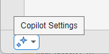
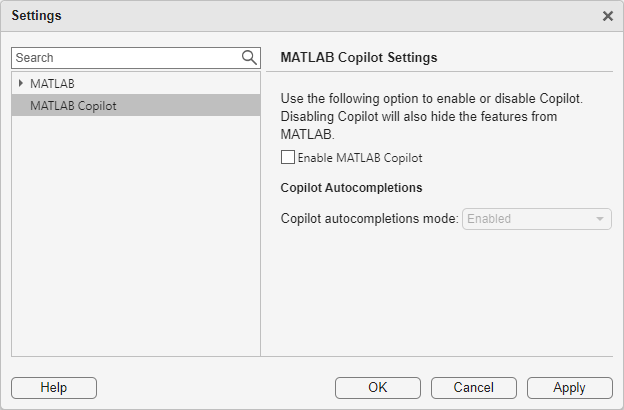
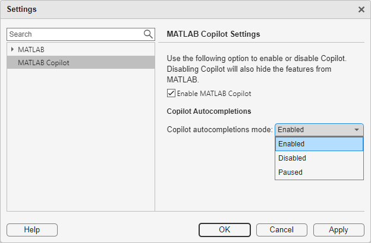

Change MATLAB Copilot Settings
You can change settings to configure MATLAB® Copilot. Use the Settings window to interactively access and modify MATLAB Copilot settings.
To open the Settings window for MATLAB Copilot settings, use one of these options:
MATLAB Toolstrip: On the Home tab, in the Environment section, click
 Settings. Then, in the left pane of the Settings window, select
MATLAB Copilot.
Settings. Then, in the left pane of the Settings window, select
MATLAB Copilot.Copilot status indicator: In the lower left corner of the MATLAB desktop, click the Copilot status indicator and select Copilot Settings.

MATLAB command prompt: Enter
preferences 'MATLAB Copilot'.
Disable MATLAB Copilot
If you have a license for MATLAB Copilot, then it is enabled by default. You can disable Copilot and hide its features in MATLAB by clearing the Enable MATLAB Copilot check box in the MATLAB Copilot Settings window.

You also can disable Copilot programmatically using the
matlab.desktop.copilot.CopilotEnabled.PersonalValue setting. You can
set its value as:
false— Disabledtrue— Enabled
For example, disable Copilot.
s = settings; s.matlab.desktop.copilot.CopilotEnabled.PersonalValue = false;
To enable Copilot, select the Enable MATLAB Copilot check box in the Settings window or programmatically set the
value of matlab.desktop.copilot.CopilotEnabled.PersonalValue to
true.
Disable or Pause Autocompletions
In the Editor and Live Editor, you can use Copilot autocompletion to generate code. You can manage autocompletion behavior by using the MATLAB Copilot Settings window.
The Copilot autocompletions mode list has three options:
Enabled— In the Editor, Copilot autocompletion generates code after you press the Enter key. The generated code appears next to the button at the cursor location. This behavior is the default behavior.Disabled— Copilot autocompletion does not generate code. Pressing Enter results in a new line.Paused— Copilot autocompletion does not generate code after you press Enter. The button appears at the cursor location, but without generated code.

You also can disable autocompletions programmatically using the
matlab.editor.autocompletions.EnableAutocompletions.TemporaryValue
setting. You can set its value as:
0—Disabled1—Enabled2—Paused
For example, disable autocompletions.
s = settings; s.matlab.editor.autocompletions.EnableAutocompletions.TemporaryValue = 0;
To enable autocompletions, select Enabled from the
Copilot autocompletions mode list in the Settings window or
programmatically set
matlab.editor.autocompletions.EnableAutocompletions.TemporaryValue to
1.